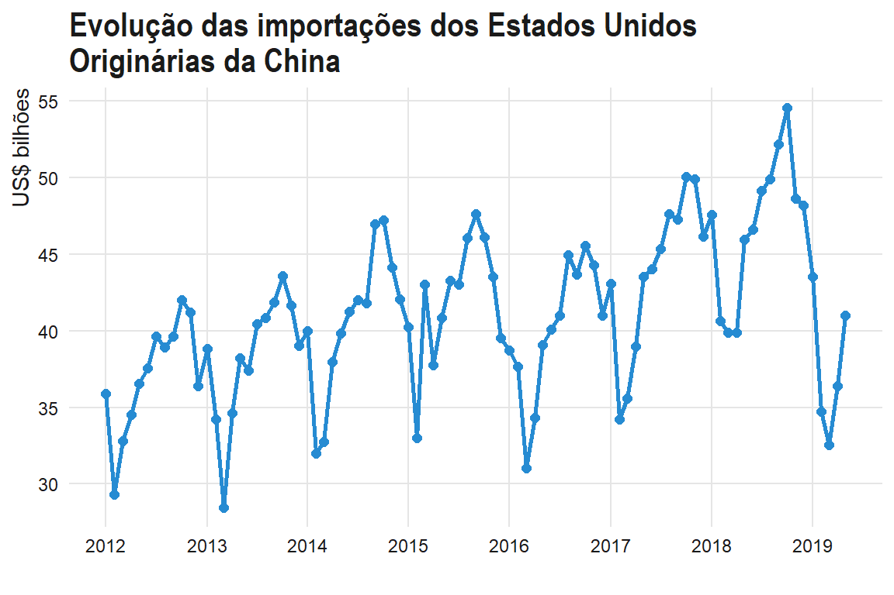
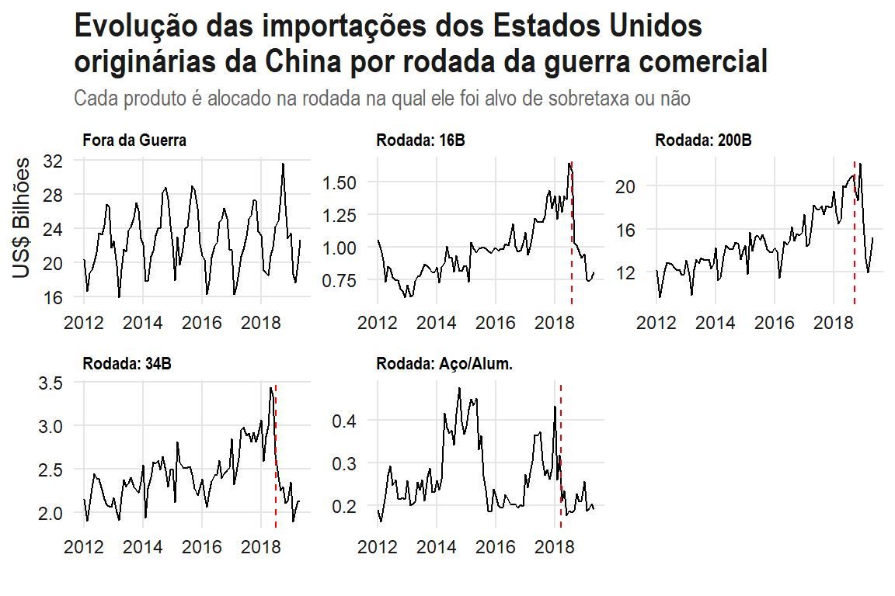
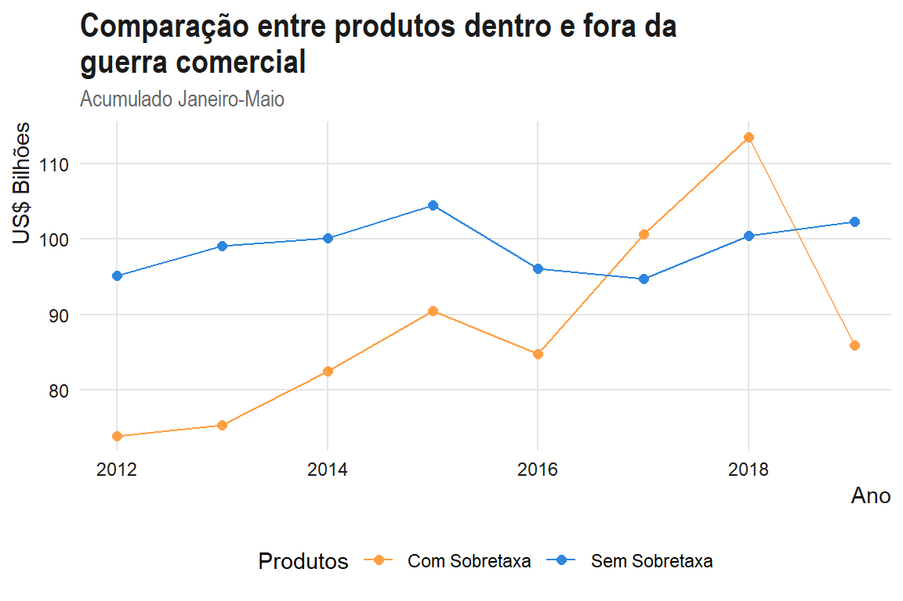

Nesta segunda parte, vamos aprofundar um pouco a nossa análise inicial. Realmente as sobretaxas impostas pelos Estados Unidos a produtos chineses não tiverem efeitos prático? Utilizando dados mensais que compreendem o período de janeiro de 2012 até maio de 2019, encontramos evidências dos seus efeitos. As estimativas indicam um nível de importação, em média, 20% menor para os produtos chineses sujeitos a sobretaxas.
Na apresentação do pacote comtradr, fizemos uma breve análise sobre o comércio entre os Estados Unidos e China, separando os produtos que estavam sobretaxados daqueles que ainda não haviam sido afetados pela guerra.
Um resultado que chamou a atenção foi que as importações dos Estados Unidos de produtos chineses que estavam sujeitos a elevações tarifárias continuaram crescendo em 2018. Na prática, não significa dizer que as tarifas adicionais não tiveram efeitos, pois poderia ter sido observado um crescimento ainda maior na ausência dessas elevações. Outra possibilidade é que, considerando a dinâmica do comércio internacional e o fato das elevações relevantes terem acontecido mais perto do final do ano, os efeitos não apareceriam imediatamente.
Infelizmente, os dados mensais do comtrade não são atualizados numa frequência razoável. Assim, baixei os dados de importações dos Estados Unidos no sistema USITC Dataweb. Os dados baixados trazem as informações mensais das importações dos Estados Unidos originárias da China entre janeiro de 2012 e maio de 2019.
Feita essa introdução, vamos ao código da análise.
O trecho abaixo lista os códigos que são utilizados neste post.
library(tidyverse)
library(readxl)
library(janitor)
library(lubridate)
library(glue)
library(hrbrthemes)
library(alpaca)Utilizei a função theme_set() para definir um tema que será aplicado a todos os gráficos.
theme_set(
theme_minimal() +
theme(
axis.title = element_text(
hjust = 1,
colour = "grey10"
),
plot.title = element_text(
face = "bold",
family = "Arial Narrow",
size = 16,
colour = "grey10"
),
plot.subtitle = element_text(
family = "Arial Narrow",
color = "grey40"
),
axis.text = element_text(
colour = "grey10"
),
strip.text = element_text(
face = "bold",
family = "Arial Narrow",
hjust = 0,
colour = "black"
),
panel.grid.minor = element_blank(),
panel.grid.major = element_line(
color = "grey90"
),
legend.position = "bottom"
)
)Como já foi mencionado, os dados de comércio são do sistema USITC Dataweb. Após realizar a consulta nesse sistema, foi gerado um excel com os dados. Por definição da ferramenta, os dados de cada ano ficam armazenados em diferentes abas. Para sabermos quantas e quais abas estão presentes neste arquivo, utilizamos a função excel_sheets():
sheets_us <- excel_sheets('dataweb_us_imp_chn_.xlsx')
sheets_us
[1] "Query Parameters" "2012, General CIF Imports Val"
[3] "2013, General CIF Imports Val" "2014, General CIF Imports Val"
[5] "2015, General CIF Imports Val" "2016, General CIF Imports Val"
[7] "2017, General CIF Imports Val" "2018, General CIF Imports Val"
[9] "2019, General CIF Imports Val"Note que a primeira aba contém as informações referentes aos parâmetros da consulta realizada. As abas que estamos interessados são todas menos a primeira:
sheets_us <- sheets_us[-1]Vamos ver como estão armazenados os dados. Para isso, vamos ler a primeira aba:
read_excel('dataweb_us_imp_chn_.xlsx', sheet = sheets_us[2], skip = 2) %>%
head()
# A tibble: 6 x 14
`Data Type` `Hts Num` Jan Feb Mar Apr May Jun
<chr> <chr> <dbl> <dbl> <dbl> <dbl> <dbl> <dbl>
1 General CI~ 5407.20.~ 2.45e6 2.37e6 1.76e6 1.31e6 2.80e6 2.54e6
2 General CI~ 6404.19.~ 4.36e6 4.42e6 1.43e6 3.38e6 4.31e6 5.51e6
3 General CI~ 6401.92.~ 5.75e6 5.53e6 2.59e6 2.45e6 3.83e6 6.18e6
4 General CI~ 8480.30.~ 6.10e4 4.94e4 6.77e4 2.28e4 4.62e4 8.32e4
5 General CI~ 9405.20.~ 2.77e7 2.97e7 1.21e7 2.00e7 2.73e7 3.16e7
6 General CI~ 6104.39.~ 7.07e5 6.59e5 1.28e5 4.47e5 5.60e5 8.78e5
# ... with 6 more variables: Jul <dbl>, Aug <dbl>, Sep <dbl>,
# Oct <dbl>, Nov <dbl>, Dec <dbl>Os dados estão no formato wide, no qual cada mês está informado em uma coluna diferente. O ideal é trazer o dado para o formato long. Para fazer essa transformação, utilizamos a função gather(). O segundo detalhe é que temos várias abas. Não precisamos repetir o código para ler e manipular os dados de cada aba. Vamos utilizar o purrr com a função map_df() para aplicar o mesmo conjunto de código, mas variando o valor para o argumento sheet da função read_excel(). Vamos passar o vetor com os nomes das abas (sheets_us) e a função utilizará cada valor desse vetor, representado por .x e executará um conjunto de código que está dentro do bloco ~{}. O “df” da função map_df() indica que os resultados serão combinados em único data.frame. Veja abaixo o resultado:
dados_imp_us_chn <- map_df(sheets_us, ~{
read_excel('dataweb_us_imp_chn_.xlsx', sheet = .x, skip = 2) %>%
clean_names() %>%
select(-data_type) %>%
gather(key = month, value = value, -hts_num) %>%
mutate(year = str_sub(.x, 1, 4),
data = glue("{year}-{month}-01"),
data = ymd(data)) %>%
select(data, hts_num, value)
})
head(dados_imp_us_chn)
# A tibble: 6 x 3
data hts_num value
<date> <chr> <dbl>
1 2012-01-01 5407.20.00 2729800
2 2012-01-01 6404.19.77 1639215
3 2012-01-01 6401.92.90 11954021
4 2012-01-01 8480.30.00 190447
5 2012-01-01 9405.20.80 26072328
6 2012-01-01 6104.39.10 400629O nosso data.frame tem três colunas:
data: data da importação (apenas os anos e os meses são relevantes);hts_num: código de 8 dígitos que indica o produto que está sendo importado;value: valor importado (CIF) em US$.Com os dados preparados, vamos plotar a evolução das importações totais dos Estados Unidos de produtos chines:
dados_imp_us_chn %>%
group_by(data) %>%
summarise(value = sum(value/1e9)) %>%
ggplot(aes(x = data, y = value)) +
geom_line(size = 1.05, color = '#268bd2') +
geom_point(size = 2, color = '#268bd2') +
scale_x_date(date_breaks = "1 year", date_labels = "%Y") +
labs(
title = "Evolução das importações dos Estados Unidos\nOriginárias da China",
y = "US$ bilhões",
x = ""
)
Aqui já temos algum indicativo que há “algo de estranho” na série. A série apresenta um valor relativamente baixo para março de 2019. No entanto, esse pode ser resultado de fatores que também afetaram a totalidade das importações, e não somente aquelas que foram alvo de elevações de tarifas.
Com os dados de comércio preparados, vamos trazer também os dados que listam os conjuntos de códigos foram considerados em cada rodada de elevação tarifária. Da mesma forma do post anterior, as listas de produtos afetados serão aquelas disponibilizadas na base de daddos da Guerra Comercial disponibilizada pela Universidade de Iowa. Baixamos o arquivo tariff_list.xlsx. Este arquivo tem várias abas e cada aba representa uma rodada da guerra comercial.
O código abaixo apresenta as listas disponíveis.
read_excel('tariff_list.xlsx',
n_max = 21) %>%
clean_names() %>%
# tariff está escrito errado na planilha original
select(sheet_number, tarriff_and_quota_measures, date_started_yyyymmdd) %>%
knitr::kable()| sheet_number | tarriff_and_quota_measures | date_started_yyyymmdd |
|---|---|---|
| 1 | China 3b | 20180402 |
| 2 | China 50b wave 1 | 20180706 |
| 3 | China 50b wave 2 | 20180808 |
| 4 | EU tariff 1 | 20180622 |
| 5 | EU tariff 2 | 20180622 |
| 6 | Mexico tariff | 20180705 |
| 7 | US_CN 50b wave 1 | 20180706 |
| 8 | US_CN 50b wave 2 | 20180808 |
| 9 | Canada tariff | 20180701 |
| 10 | chn60b_tariff_increase1 | 20180918 |
| 10 | chn60b_tariff_increase2 | 20190513 |
| 11 | US200b_tariff_increase1 | 20180918 |
| 11 | US200b_tariff_increase2 | 20190509 |
| 12 | US steel aluminum | 20180323 (non_exempted countries), 20180601 (EU, Mexico, Canada) |
| 13 | US300b | pending |
| 14 | India tariff | 20180621 |
| 15 | Turkey tariff | 20180621 |
| 16 | US_argentina_quota | 20180701 |
| 17 | US_brazil_quota | 20180701 |
| 18 | US_korea_quota | 20180701 |
| 19 | US300b | pending |
Estamos interessados nas listas impostas pelos Estados Unidos contra a China, além da lista referente aos produtos de aço e alumínio. Em relação a essa última lista, a planilha não disponibiliza os dados de forma correta. Dessa forma, para a lista de aço e alumínio baixamos a lista neste link.
O código abaixo cria um data.frame para cada rodada de elevação de tarifas para as importações dos Estados Unidos.
sheets_guerra <- c(7, 8, 11)
uscn_34b <- read_excel('tariff_list.xlsx', sheet = "7") %>%
select(hts_num = hscode) %>%
mutate(
hts_num = str_pad(
string = hts_num,
width = 8,
side = "left",
pad = "0"
),
wave = "Rodada: 34B",
start_date = as.Date('2018-07-06')
)
head(uscn_34b)
# A tibble: 6 x 3
hts_num wave start_date
<chr> <chr> <date>
1 28459000 Rodada: 34B 2018-07-06
2 40113000 Rodada: 34B 2018-07-06
3 40121300 Rodada: 34B 2018-07-06
4 84011000 Rodada: 34B 2018-07-06
5 84012000 Rodada: 34B 2018-07-06
6 84013000 Rodada: 34B 2018-07-06
uscn_16b <- read_excel('tariff_list.xlsx', sheet = "8") %>%
select(hts_num = hscode) %>%
mutate(
hts_num = str_pad(
string = hts_num,
width = 8,
side = "left",
pad = "0"
),
wave = "Rodada: 16B",
start_date = as.Date('2018-08-08')
)
head(uscn_16b)
# A tibble: 6 x 3
hts_num wave start_date
<chr> <chr> <date>
1 27101930 Rodada: 16B 2018-08-08
2 27101935 Rodada: 16B 2018-08-08
3 27101940 Rodada: 16B 2018-08-08
4 34031910 Rodada: 16B 2018-08-08
5 34031950 Rodada: 16B 2018-08-08
6 34039900 Rodada: 16B 2018-08-08
uscn_200b <- read_excel('tariff_list.xlsx', sheet = "11") %>%
select(hts_num = hscode) %>%
mutate(
hts_num = str_pad(
string = hts_num,
width = 8,
side = "left",
pad = "0"
),
wave = "Rodada: 200B",
start_date = as.Date('2018-09-18')
)
head(uscn_200b)
# A tibble: 6 x 3
hts_num wave start_date
<chr> <chr> <date>
1 02032920 Rodada: 200B 2018-09-18
2 02032940 Rodada: 200B 2018-09-18
3 02061000 Rodada: 200B 2018-09-18
4 02081000 Rodada: 200B 2018-09-18
5 02089020 Rodada: 200B 2018-09-18
6 02089025 Rodada: 200B 2018-09-18
us_steel <- read_excel('Sec232-SteelAlum.xlsx') %>%
select(hts_num = hscode) %>%
mutate(
wave = "Rodada: Aço/Alum.",
start_date = as.Date('2018-03-23')
)
head(us_steel)
# A tibble: 6 x 3
hts_num wave start_date
<chr> <chr> <date>
1 72061000 Rodada: Aço/Alum. 2018-03-23
2 72069000 Rodada: Aço/Alum. 2018-03-23
3 72071100 Rodada: Aço/Alum. 2018-03-23
4 72071200 Rodada: Aço/Alum. 2018-03-23
5 72071900 Rodada: Aço/Alum. 2018-03-23
6 72072000 Rodada: Aço/Alum. 2018-03-23Então, os dados são combinados em um único data.frame utilizando a função bind_rows(). Se por acaso algum produto aparece em mais de uma lista, optou-se por deixá-lo apenas na lista mais antiga.
uscn_waves <- bind_rows(uscn_16b, uscn_34b) %>%
bind_rows(uscn_200b) %>%
bind_rows(us_steel) %>%
group_by(hts_num) %>%
filter(start_date == min(start_date)) %>%
ungroup()O código abaixo cria uma visualização da evolução dos produtos que foram atingidos por cada rodada da guerra, além dos produtos que estavam de fora (até a semana passada).
start_dates <- uscn_waves %>%
select(wave, start_date) %>%
distinct()
dados_imp_us_chn %>%
mutate(hts_num = str_remove_all(hts_num, "\\.")) %>%
left_join(uscn_waves) %>%
replace_na(list(wave = "Fora da Guerra")) %>%
group_by(data, wave) %>%
summarise(value = sum(value/1e9)) %>%
ggplot(aes(x = data, y = value)) +
geom_line(show.legend = FALSE) +
geom_vline(data = start_dates, aes(xintercept = start_date),
linetype = "dashed", color = "red") +
facet_wrap(~wave, scales = "free") +
labs(
title = "Evolução das importações dos Estados Unidos\noriginárias da China por rodada da guerra comercial",
subtitle = "Cada produto é alocado na rodada na qual ele foi alvo de sobretaxa ou não",
x = "",
y = "US$ Bilhões"
)
Como os dados vão até maio de 2019, vamos inicialmente comparar os totais entre janeiro e maio de cada ano, separando os produtos entre aqueles que estão sujeitos às elevações tarifárias (Com Sobretaxa) e aqueles que ainda não tinham sido alvo (Sem Sobretaxa).
dados_imp_us_chn %>%
mutate(hts_num = str_remove_all(hts_num, "\\.")) %>%
left_join(uscn_waves) %>%
mutate(
wave = ifelse(is.na(wave), "Sem Sobretaxa", "Com Sobretaxa")
) %>%
filter(month(data) <= 5) %>%
mutate(
year = year(data)
) %>%
filter(year <= 2019) %>%
group_by(year, wave) %>%
summarise(
value = sum(value/1e9)
) %>%
ggplot(aes(x = year, y = value, color = wave)) +
geom_line() +
geom_point(size = 2) +
labs(
title = "Comparação entre produtos dentro e fora da\nguerra comercial",
subtitle = "Acumulado Janeiro-Maio",
x = "Ano",
y = "US$ Bilhões",
color = "Produtos"
) +
scale_color_manual(values = c("#ff9f43", "#2e86de"))
Observa-se que até 2016 o comportamento das duas séries era similar, mas a série composta por produtos sobretaxados ultrapassou, em valor, os produtos que estavam foram da guerra. Contudo, em 2019, o acumulado das importações para os meses entre janeiro e maio apresentou uma queda significativa, enquanto os produtos sem sobretaxa apresentam crescimento. Isto é um indicativo que, provavelmente, as tarifas adicionais tiveram efeitos em 2019, o que é esperado dado que elas têm o efeito de elevar os preços dos produtos chineses aos consumidores americanos, reduzindo a sua demanda.
Para continuar a análise, vamos criar um data.frame que possui informações por produto (código HTS de 8 dígitos) do total importado para os período 01/20171 a 05/2017 (pré-guerra) e 01/2019 a 05/2019 (pós-guerra), uma variável indicadora (sobretaxado) que é igual a 1 se o produto foi sobretaxado e 0 caso contrário, e mais uma variável indicadora (sobretaxado_pos) que é igual a 1 se o produto foi sobretaxado e o período da informação é posterior ao início da guerra comercial.
dados_modelo <- dados_imp_us_chn %>%
mutate(hts_num = str_remove_all(hts_num, "\\.")) %>%
left_join(uscn_waves) %>%
replace_na(list(wave = "Fora da Guerra")) %>%
mutate(
periodo = case_when(
between(data, as.Date("2017-01-01"), as.Date("2017-05-01")) ~ "pre",
between(data, as.Date("2019-01-01"), as.Date("2019-05-01")) ~ "pos",
TRUE ~ "eliminar"
),
sobretaxado = +(wave != "Fora da Guerra"),
sobretaxado_pos = +(sobretaxado == 1 & periodo == "pos")
) %>%
filter(periodo != "eliminar") %>%
mutate(periodo = factor(periodo, levels = c("pre", "pos"))) %>%
group_by(periodo, sobretaxado, sobretaxado_pos, hts_num) %>%
summarise(value = sum(value/1e6)) Apesar de ser comum trabalhar com a variável dependente (valor importado) em log, a presença de zeros inviabiliza tal procedimento. Para não eliminar os dados de valor igual a zero, vamos estimar um modelo na forma multiplicativa, utilizando o PPML2 (Poisson Pseudo Maximum Likelihood). O nosso modelo será:
\[M_{it} = \exp[\beta_0 + \beta_1 \text{POS}_{t} + \beta_2 \text{SOBRETAXADO}_{i} + \beta_3 \text{SOBRETAXADO}_{i} \times \text{POS}_{t}]\times \epsilon_{it}\]
O modelo acima pode ser estimado utilizando a função glm() do R, com a família (family) quasipoisson(). Adicionalmente, computamos o desvio-padrão dos coeficientes clusterizando a matriz de variância-covariância pelo código do produto.
fit <- glm(value ~ periodo + sobretaxado + sobretaxado_pos,
data = dados_modelo, family = quasipoisson())
vcov_cluster <- multiwayvcov::cluster.vcov(fit,
cluster = dados_modelo$hts_num,
df_correction = FALSE)
lmtest::coeftest(fit, vcov_cluster)
z test of coefficients:
Estimate Std. Error z value Pr(>|z|)
(Intercept) 3.631609 0.214898 16.8992 < 2.2e-16 ***
periodopos 0.119564 0.030909 3.8682 0.0001096 ***
sobretaxado -0.859813 0.240436 -3.5761 0.0003488 ***
sobretaxado_pos -0.189422 0.045118 -4.1984 2.688e-05 ***
---
Signif. codes: 0 '***' 0.001 '**' 0.01 '*' 0.05 '.' 0.1 ' ' 1Os resultados indicam uma redução média de, aproximadamente, 17% ( \((e^{-0.1894} - 1) \times 100\) ).
O mesmo modelo, com desvios-padrão clusterizados, pode ser estimado de forma mais simples utilizando a função feglm() do pacote alpaca. A única diferença é que essa função espera a especificação de pelo menos um efeito fixo. No caso da nosso modelo, inicialmente é a variável que controla se o produto foi sobretaxado ou não. Também informamos por qual variável os erros serão clusterizados, no caso hts_num. Veja que o resultado para o coeficiente da nossa variável de interesse (sobretaxado_pos) é igual ao anterior.
feglm(value ~ periodo + sobretaxado_pos | sobretaxado | hts_num ,
data = dados_modelo, family = poisson()) %>%
summary(type = "clustered", cluster = ~hts_num)
poisson - log link
value ~ periodo + sobretaxado_pos | sobretaxado | hts_num
Estimates:
Estimate Std. error z value Pr(> |z|)
periodopos 0.11956 0.03091 3.868 0.00011 ***
sobretaxado_pos -0.18942 0.04512 -4.198 2.69e-05 ***
---
Signif. codes: 0 '***' 0.001 '**' 0.01 '*' 0.05 '.' 0.1 ' ' 1
residual deviance= 2067243,
null deviance= 2152787,
n= 16969, l= [2]
Number of Fisher Scoring Iterations: 3 Da mesma forma, podemos reestimar o modelo, mas ao invés de controlar por produtos que foram sobretaxados ou não, vamos incluir um efeito fixo por produto (hts_num):
feglm(value ~ periodo + sobretaxado_pos | hts_num | hts_num,
data = dados_modelo, family = poisson()) %>%
summary(type = "clustered", cluster = ~hts_num)
poisson - log link
value ~ periodo + sobretaxado_pos | hts_num | hts_num
Estimates:
Estimate Std. error z value Pr(> |z|)
periodopos 0.08314 0.03098 2.683 0.00729 **
sobretaxado_pos -0.24179 0.04492 -5.382 7.36e-08 ***
---
Signif. codes: 0 '***' 0.001 '**' 0.01 '*' 0.05 '.' 0.1 ' ' 1
residual deviance= 14730.51,
null deviance= 2138549,
n= 16657, l= [8733]
( 312 observation(s) deleted due to perfect classification )
Number of Fisher Scoring Iterations: 8 Nesse caso, chegamos a um efeito médio de, aproximadamente, -21,4%.
O objetivo desse post foi complementar o post de introdução do comtradr. Diferentemente do primeiro post, a análise realizada e as estimativas obtidas indicam que as medidas de elevações tarifárias têm o potencial de reduzir em um quinto as exportações da China para os Estados Unidos. Considerando que os Estados Unidos pretendem ampliar as sobretaxas às demais exportações da China, o efeito econômico da medida pode ser considerável, chegando a uma redução de exportações chinesas de mais de US$ 100 bilhões. Vale destacar que é possível que as importações totais dos Estados Unidos não tenham diminuído, uma vez que outros países podem estar fornecendo os produtos que eram importados da China.
Escolher 2016 como ano pré-guerra não altera de maneira significativa os resultados.↩
Para ver uma discussão sobre a utilização do PPML para estimação de modelos Dif-in-Dif: https://www.degruyter.com/downloadpdf/j/jem.2019.8.issue-1/jem-2016-0011/jem-2016-0011.pdf. Aqui assumimos que a tendência entra de forma multiplicativa no modelo.↩
For attribution, please cite this work as
Alencar (2019, Aug. 10). Fulljoin: Analisando dados da guerra comercial - Parte 2. Retrieved from https://www.fulljoin.com.br/posts/2019-07-30-analisando-dados-da-guerra-comercial-parte-2/
BibTeX citation
@misc{alencar2019analisando,
author = {Alencar, Paulo Felipe},
title = {Fulljoin: Analisando dados da guerra comercial - Parte 2},
url = {https://www.fulljoin.com.br/posts/2019-07-30-analisando-dados-da-guerra-comercial-parte-2/},
year = {2019}
}